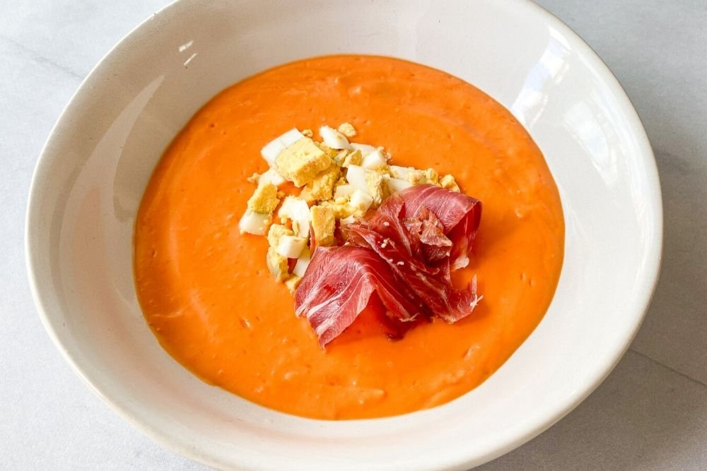

Salmorejo

lista de ingredientes para 4 personas
- kg. de tomates
- 200 gr. de miga de pan
- 1 diente de ajo
- 100 gr. de jamón ibérico
- 2 huevos
- agua
- aceite de oliva virgen extra
- sal
- perejil
Preparacion
- Cuece los huevos en una cazuela con agua durante 10 minutos desde el momento en que empiece a hervir el
agua. Refresca y resérvalos.
- Lava los tomates, córtalos y colócalos en una jarra. Tritúralos bien con la batidora eléctrica. Cuélalos
para eliminar la piel y las pepitas. Pasa el puré a la jarra.
- Trocea la miga de pan e incorpórala. Añade el diente de ajo picado, una pizca de sal y 100 ml de aceite.
Tritura todo bien hasta que quede una crema homogénea. Enfríalo en el frigorífico.
- Pela los huevos y pícalos en daditos. Pica también el jamón ibérico en taquitos.
- Sirve el salmorejo y coloca encima la guarnición. Adorna con unas hojas de perejil.
Return to main page